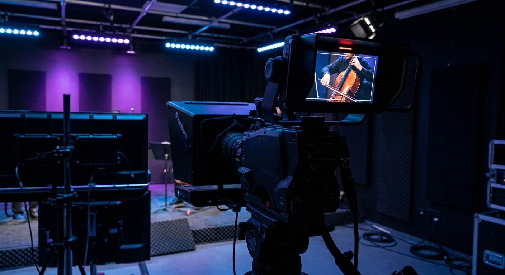
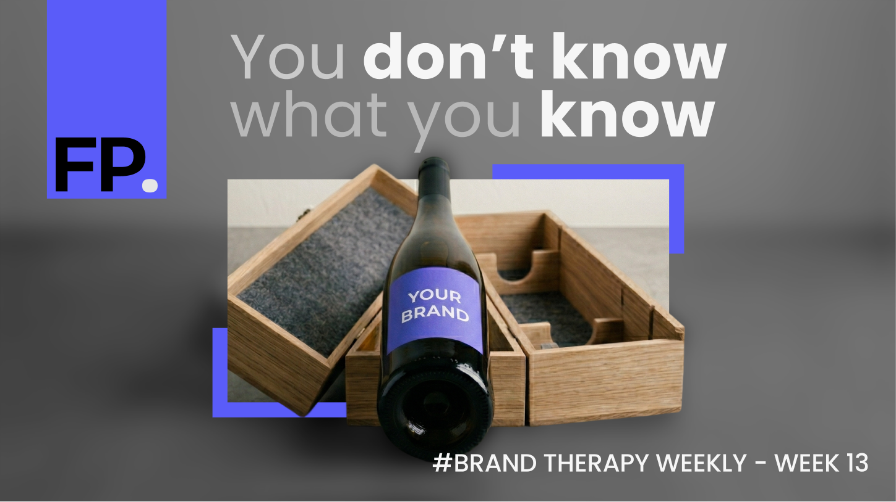
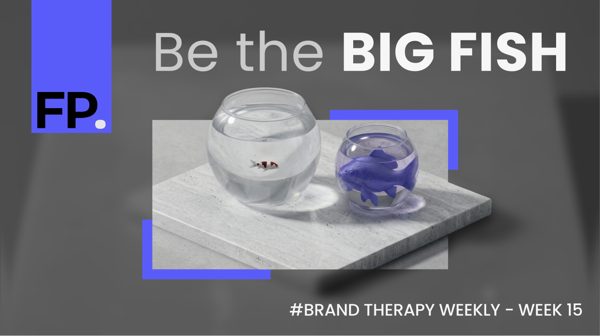
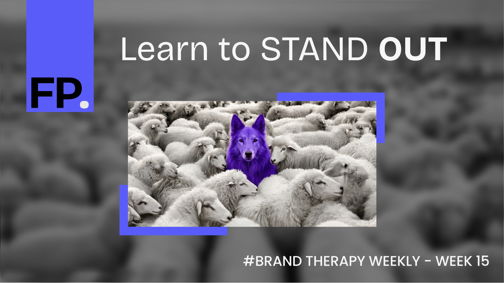
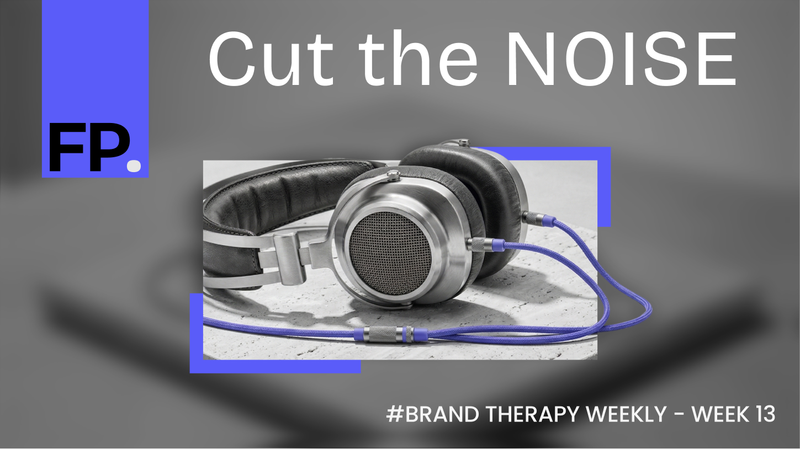
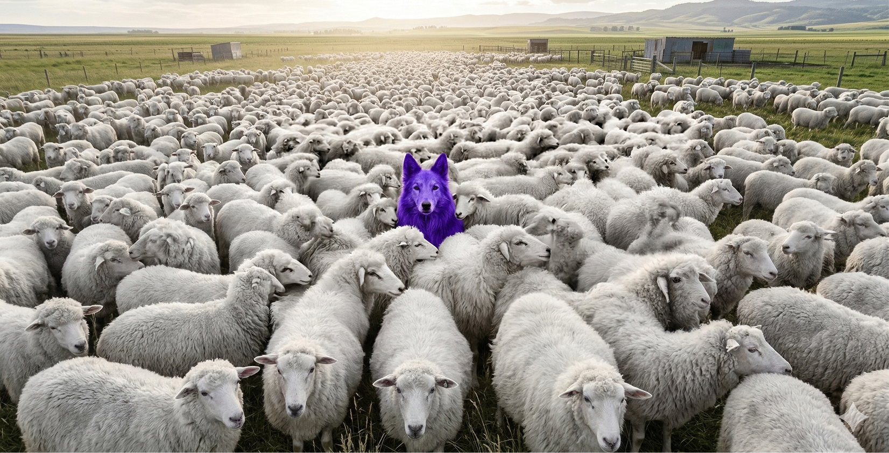
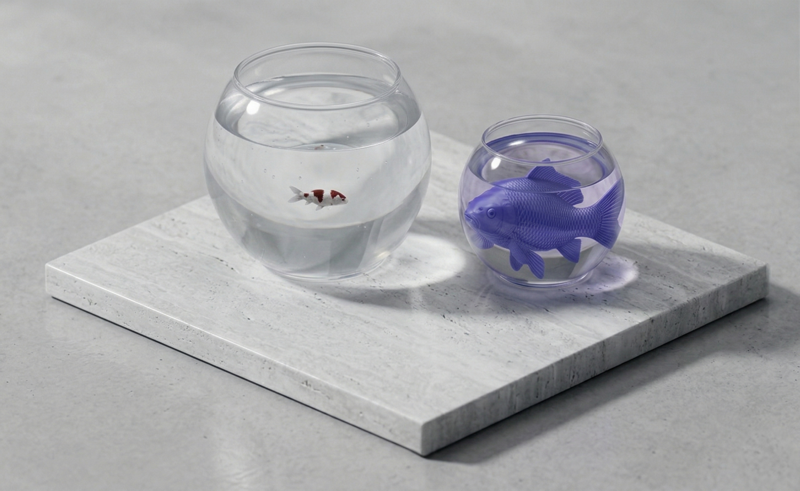
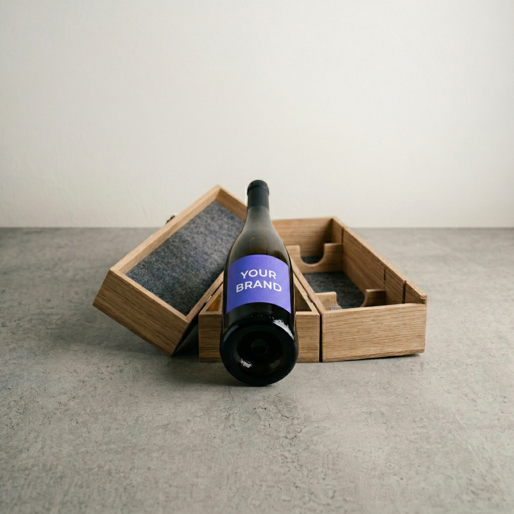
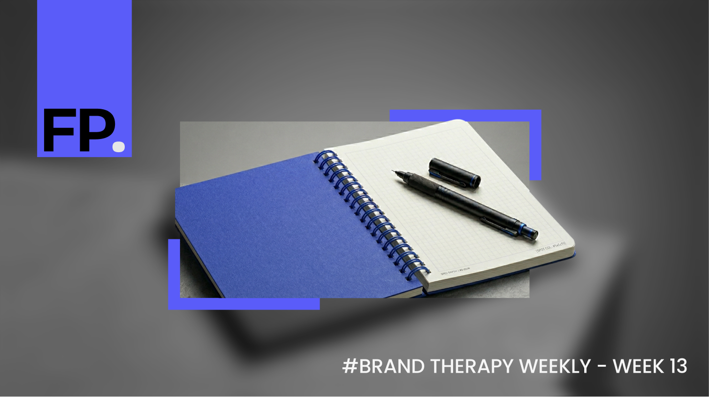

Signature.
The visual recognition system. Four devices that make FP recognizable at a glance, before anyone reads a word.

Viewfinder Bracket
Two purple L-shaped corners framing the focal area. The primary recognition signal.
Purple Dot
FP. Two letters and an accent-colored period. The mark at every scale.
Grain Texture
Fractal noise at 0.025 opacity. Analog warmth on every digital surface.
Accent Period
Every headline ends with a #5A5CF9 period. The cheapest, most consistent signal.
The Viewfinder Bracket.
The viewfinder is the literal visualization of looking through a lens and finding focus. Inside the frame: sharp, clear, in focus. Outside: blurred, darkened, unfocused. This is the brand promise made visual.

Construction.
Two stacked image layers. Background carries blur and brightness filter. Foreground is clipped to the focal rectangle. Arms sit OUTSIDE the focal boundary.
33% of adjacent focal dimension5% of image min-dimension (28px on a 560px-tall hero)3% of image min-dimension (17px on a 560px-tall hero)#5A5CF9| Variant | Corners | Outside Treatment | Usage |
|---|---|---|---|
| Portrait | 2-corner TR + BL |
blur(8px) brightness(0.45) |
Florian portraits, hero images, social posts |
| Subject | 2-corner TR + BL |
blur(12px) brightness(0.3) |
Concept imagery, blog thumbnails, BTW headers |
| Type Lockup | 1-corner TL only |
None | Eyebrow + headline lockups |
| Button | 4-corner All |
None | Buttons and interactive elements only |
2-corner on photos
Top-right + bottom-left. Diagonal tension. Default for every photographed surface.
Bracket as image border
The arms never sit on the image edges. They frame the focal rectangle, inside the image.
Data-driven focal points
Coordinates from detect-focal-point.py and MANIFEST.md. Portraits: bridge of nose. Subjects: purple element centroid.
Visually estimated placement
Never guess. If detection fails, use the calibrator with MANUAL flag.
Blur + darken outside
Brightness filter on the blurred background layer. Never a separate solid-color overlay.
4-corner on photos
Four corners are reserved for buttons and UI elements. Photos always use 2-corner.
The System in Action.
The viewfinder bracket in production. Social posts, blog thumbnails, and content headers showing the recognition system across portrait and subject modes.






The Type Lockup.
Single-corner viewfinder for typography. Asymmetric L: 28px top arm, 10px left arm, 2px weight. Replaces a horizontal dash before an eyebrow + headline pair. Type only, never on a photo.
The Purple Dot.
Two letters and a period. The dot carries the accent color and becomes the brand's most recognizable element at small scale. Works at every size, on every surface.
Grain Texture.
Subtle noise overlay on all surfaces. Fractal noise at 0.025 opacity. The difference between clinical and crafted. Barely visible, always present.
The Accent Period.
Every headline ends with a #5A5CF9 period. The cheapest brand signal, the most consistent. This page uses it throughout.
Clarity is the strategy.
Not broken. Unfocused.
The tweaking loop.
What I noticed this week.
Subject Mode Process.
Concept image, then viewfinder application. The raw render establishes the metaphor. The bracket treatment turns it into a brand asset. Same operation, different subjects.




Recognition Test.
The signature system works when recognition happens before reading.
If someone sees a photo with two purple L-shaped corners framing the subject, blurred outside, sharp inside, they should think FP before reading any text.